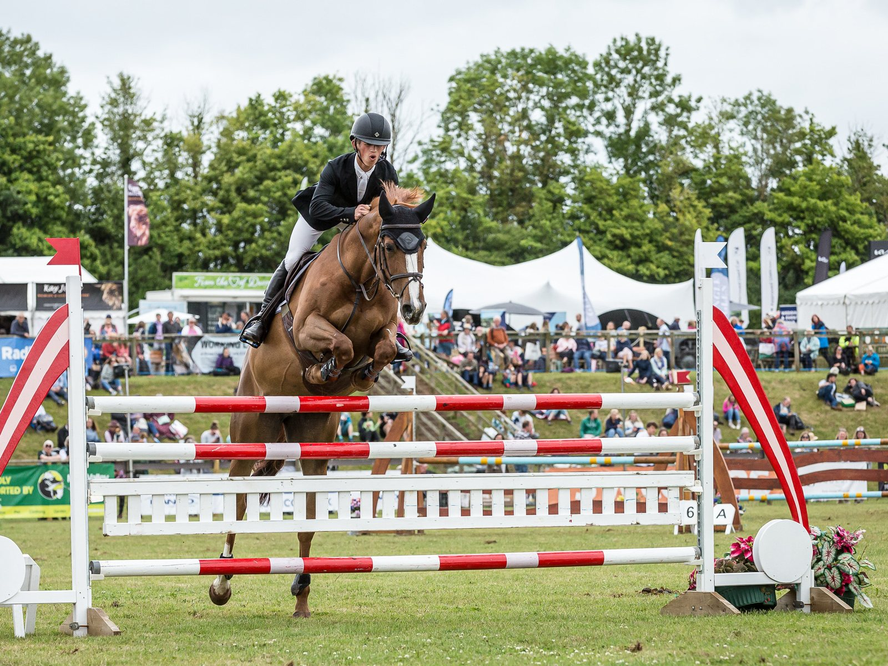

Daniel Bluman y Gemma W se adjudican el Classic de 1,50 m del CSI3* de Amenia
El israelí Daniel Bluman ganó con Gemma W el 1.50m Jumper Classic CSI3* del Discovery Land Company Masters, en Amenia (Nueva York), por delante de Megan McDermott y Philip McGuane.

Medio segundo largo separó a Bluman de la segunda plaza. Con su compañera de muchos años, "Gemma W", hizo cero faltas y paró el crono en 43,39 s. Megan McDermott, con "Da Vinci DV Z", también terminó sin faltas, pero en 43,92 s.
El tercer puesto fue para el irlandés Philip McGuane y "Paso Doble SCF", que necesitaron 45,68 s. Por detrás, sin penalizar, quedaron Caitlyn Connors con "Quinto de Obernai" (45,80 s), Sloane Coles con "Ninja JW van de Moerhoeve" (46,47 s) y el colombiano Juan Pablo Betancourt con "Henry Jota Peperoni" (47,89 s). Seis recorridos limpios entre los diez primeros.
El desenlace pudo ser otro. Charlotte Jacobs salió la última a pista con "Cristiano Obolensky" y llevaba el tiempo para ganar: su 42,56 s fue el registro más rápido de la clasificación. Sin embargo, derribó el último obstáculo y esos 4 puntos la relegaron a la séptima plaza.
Con la misma penalización terminaron la canadiense Erynn Ballard y "Genius de Rance" (43,75 s), octavos, y el irlandés Christian Coyle con "Chicago CM" (46,94 s), novenos. Cerró los diez primeros Georgina Bloomberg con "Cassina", con 1 punto en 75,78 s.
La prueba repartió 62.500 dólares en premios y llegó en buena racha para Bluman, que venía de imponerse en el Gran Premio del CSI5* de Greenwich.
El programa del concurso tenía como prueba principal el Gran Premio CSI3*, con jinetes de cinco países en la lista de salida. Entre ellos figuraban Kent Farrington y McLain Ward, números 2 y 9 del mundo, el colombiano Roberto Teran Tafur, que acababa de terminar entre los cinco primeros del Campeonato del Mundo de la FEI, y el egipcio Nayel Nassar.
— Redacción de Hípica al Día